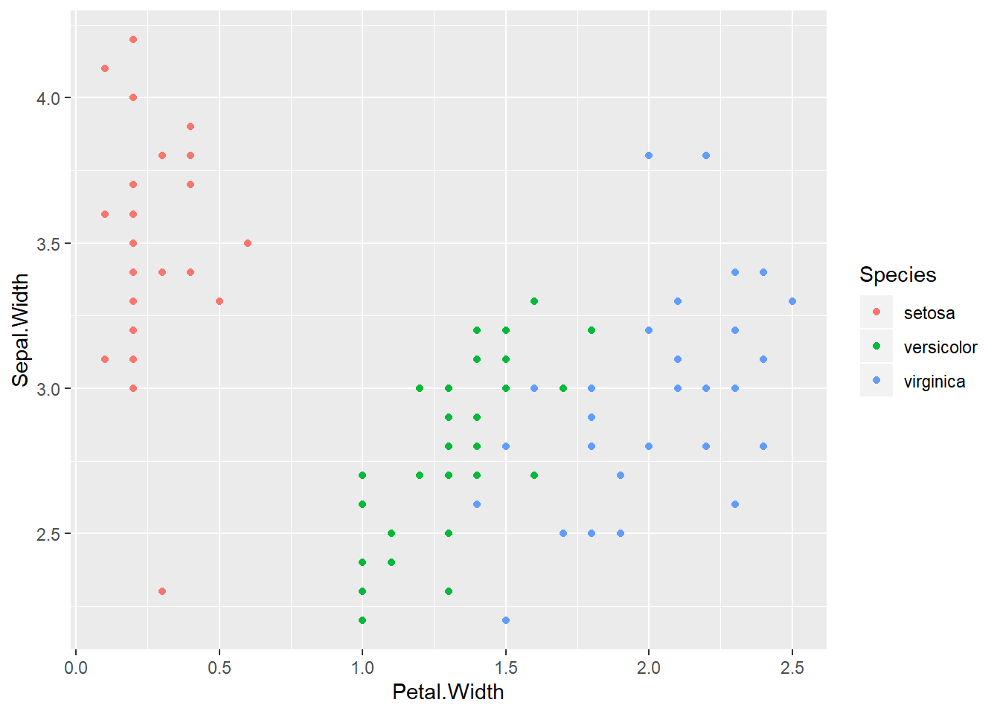
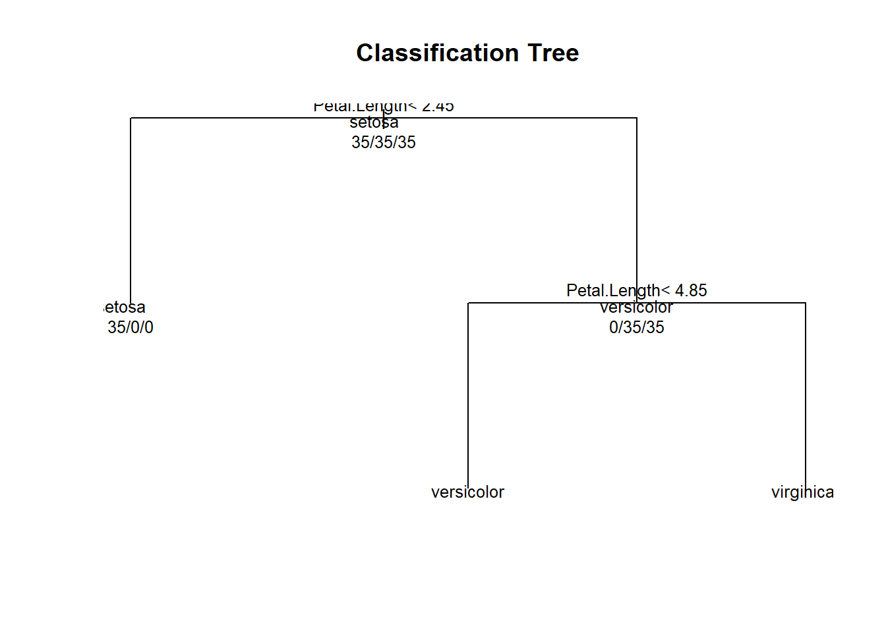
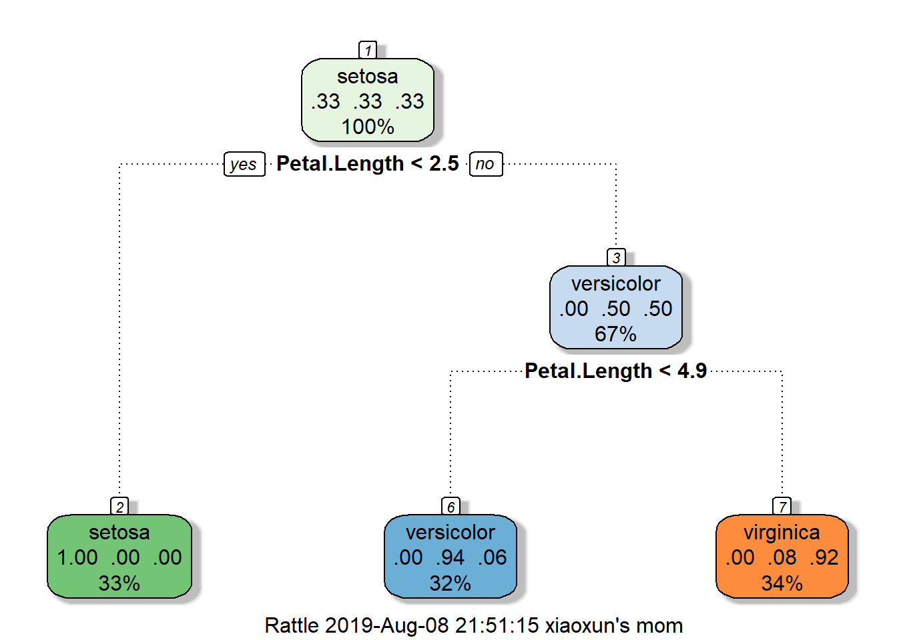
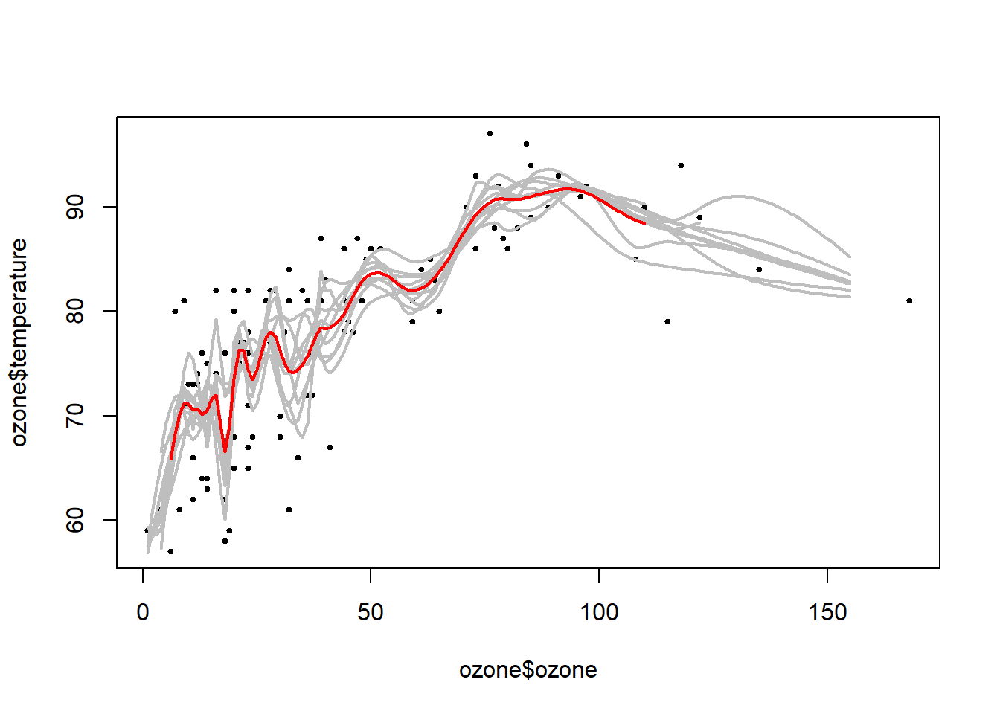
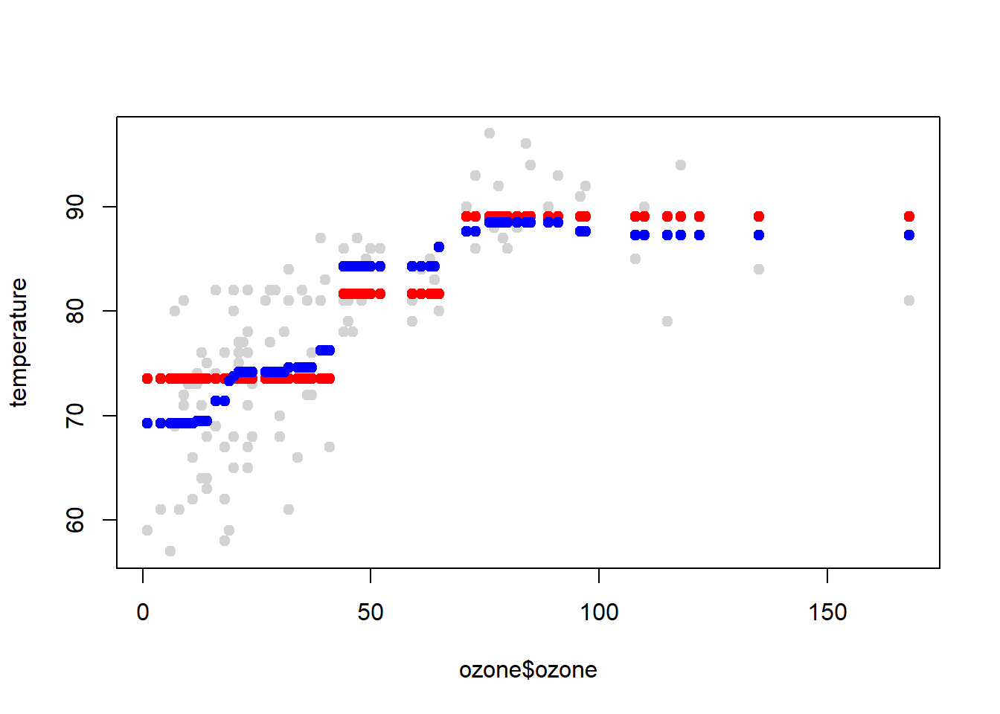
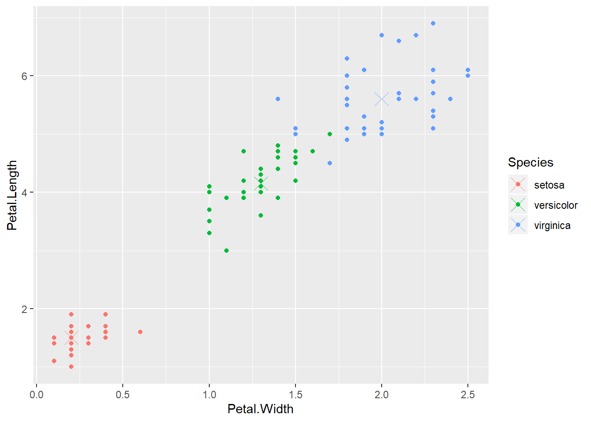
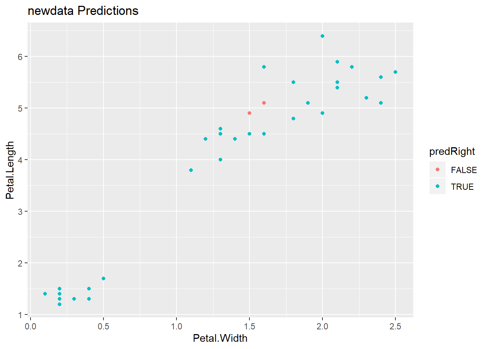
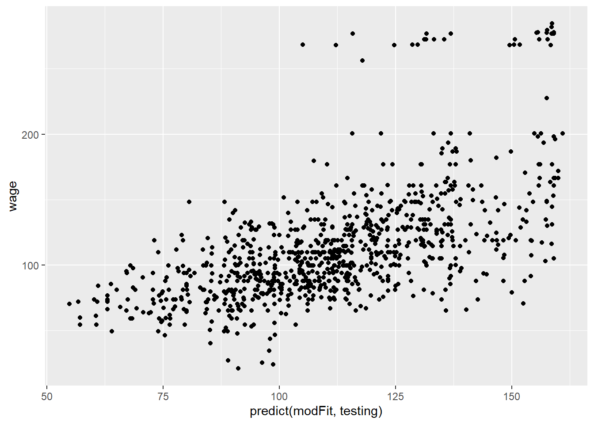

This week focuses on the prediction of categorical variables.
data(iris); library(ggplot2); library(caret)
names(iris)## [1] "Sepal.Length" "Sepal.Width" "Petal.Length" "Petal.Width"
## [5] "Species"table(iris$Species) #try to predict Species##
## setosa versicolor virginica
## 50 50 50inTrain<-createDataPartition(y=iris$Species, p=0.7, list=FALSE)
training<-iris[inTrain, ]
testing<-iris[-inTrain, ]
dim(training); dim(testing)## [1] 105 5## [1] 45 5# see clearly three groups which may be hard for linear model fitting
qplot(Petal.Width, Sepal.Width, colour=Species, data=training)
library(caret)
modFit<-train(Species~., method="rpart", data=training) #r package in partition tree method
print(modFit$finalModel)## n= 105
##
## node), split, n, loss, yval, (yprob)
## * denotes terminal node
##
## 1) root 105 70 setosa (0.33333333 0.33333333 0.33333333)
## 2) Petal.Length< 2.45 35 0 setosa (1.00000000 0.00000000 0.00000000) *
## 3) Petal.Length>=2.45 70 35 versicolor (0.00000000 0.50000000 0.50000000)
## 6) Petal.Length< 4.85 34 2 versicolor (0.00000000 0.94117647 0.05882353) *
## 7) Petal.Length>=4.85 36 3 virginica (0.00000000 0.08333333 0.91666667) *#an alterative way to see - graph
plot(modFit$finalModel, uniform=TRUE, main="Classification Tree") # dendogram
text(modFit$finalModel, use.n=TRUE, all=TRUE, cex=0.8)
# prettier plots and need the "rattle" package
library(rattle)## Rattle: A free graphical interface for data science with R.
## Version 5.2.0 Copyright (c) 2006-2018 Togaware Pty Ltd.
## Type 'rattle()' to shake, rattle, and roll your data.fancyRpartPlot(modFit$finalModel)
# make prediction using the decision tree model
table(predict(modFit, newdata=testing), testing$Species)##
## setosa versicolor virginica
## setosa 15 0 0
## versicolor 0 14 1
## virginica 0 1 14The advantage of bagging is that it has similar bias as compared to a single model, but variance of the prediction is reduced. It has shown that bagging is more useful in non-linear setting.
library(ElemStatLearn); data(ozone, package="ElemStatLearn")##
## Attaching package: 'ElemStatLearn'## The following object is masked _by_ '.GlobalEnv':
##
## spamozone<-ozone[order(ozone$ozone), ] #try to predict temperature as a function of ozone
str(ozone)## 'data.frame': 111 obs. of 4 variables:
## $ ozone : num 1 4 6 7 7 8 9 9 9 10 ...
## $ radiation : int 8 25 78 48 49 19 24 36 24 264 ...
## $ temperature: int 59 61 57 80 69 61 81 72 71 73 ...
## $ wind : num 9.7 9.7 18.4 14.3 10.3 20.1 13.8 14.3 10.9 14.3 ...#10 random samples with replacement from dataset
#ozone variable ranges from 1 to 168 and we make prediction using 155 ozone numbers
ll<-matrix(NA, nrow=10, ncol=155)
for (i in 1:10){
ss<-sample(1:dim(ozone)[1], replace=T)
ozone0<-ozone[ss, ]; ozone0<-ozone0[order(ozone0$ozone), ]
#similar to spline, loess produces a smooth curve
loess0<-loess(temperature~ozone, data=ozone0, span=0.2) #span option controls how smooth the loess curve is
ll[i, ]<-predict(loess0, newdata=data.frame(ozone=1:155))
}
#data points
plot(ozone$ozone, ozone$temperature, pch=19, cex=0.5)
#the ten estimation lines from bootstrap samples
for (i in 1:10) {lines(1:155, ll[i, ], col="grey", lwd=2)}
#the average estimation (bagging) line
lines(1:155, apply(ll, 2, mean), col="red", lwd=2)
In the train function, other models are available for bagging. Use method options to choose bagEarth, treebag, and bagFDA etc..
Alternatively, you can build your own function using the bag function.
library(party)
predictors=data.frame(ozone=ozone$ozone)
temperature=ozone$temperature
treebag<-bag(predictors, temperature, B=10, bagControl=bagControl(fit=ctreeBag$fit, predict=ctreeBag$pred, aggregate=ctreeBag$aggregate))
#data points
plot(ozone$ozone, temperature, col="lightgrey", pch=19)
#first tree estimate
points(ozone$ozone, predict(treebag$fits[[1]]$fit, predictors), pch=19, col="red")
#combined 10 tree estimates
points(ozone$ozone, predict(treebag, predictors), pch=19, col="blue")
Bagging is often used with trees - an extension is random forests, which is highly accurate and popular in many data science contests.
The drawback is the method can be slow to run on computer, but you can use parallel computing. And, it may lead to overfitting, in which case, it is hard to tell which tree leads to the problem). It is a combination of many tree models, it can be harder to interpret the decision rule.
data(iris); library(ggplot2)
inTrain <- createDataPartition(y=iris$Species, p=0.7, list=FALSE)
training <- iris[inTrain,]
testing <- iris[-inTrain,]
library(caret); library(randomForest)
modFit <- train(Species~ .,data=training,method="rf",prox=TRUE) #"rf" is the random forest method; prox=TRUE produces extra info
getTree(modFit$finalModel,k=2) #look at a specific tree## left daughter right daughter split var split point status prediction
## 1 2 3 4 0.80 1 0
## 2 0 0 0 0.00 -1 1
## 3 4 5 3 4.85 1 0
## 4 6 7 1 4.95 1 0
## 5 8 9 4 1.75 1 0
## 6 0 0 0 0.00 -1 3
## 7 0 0 0 0.00 -1 2
## 8 10 11 4 1.60 1 0
## 9 0 0 0 0.00 -1 3
## 10 0 0 0 0.00 -1 3
## 11 0 0 0 0.00 -1 2irisP <- classCenter(training[,c(3,4)], training$Species, modFit$finalModel$prox) #take only `Petal.Length` and `Petal.Width` in irisP
irisP <- as.data.frame(irisP); irisP$Species <- rownames(irisP)
p <- qplot(Petal.Width, Petal.Length, col=Species,data=training)
p + geom_point(aes(x=Petal.Width,y=Petal.Length,col=Species),size=5,shape=4,data=irisP)
pred <- predict(modFit,testing)
testing$predRight <- pred==testing$Species
table(pred,testing$Species)##
## pred setosa versicolor virginica
## setosa 15 0 0
## versicolor 0 12 0
## virginica 0 3 15qplot(Petal.Width,Petal.Length,colour=predRight,data=testing,main="newdata Predictions")
Along with random forest, boosting also produces very accurate prediction.
The function is a weighted average of models.
The goal of minimized error on the training set.
The algorithm is to use iterative methods to select one classifier at each step, calculate the weights based on error, and upweight missed classifications and select next classifer.
One large subclass of boosting is gradient boosting. * gbm - boosting with trees * mboost - model based boosting * ada - statistical boosting based on additive logitstic regression
Adaboost is perhaps the most famous boosting method.
Adaboost on Wikipedia
library(ISLR); data(Wage); library(ggplot2); library(caret);
Wage<-subset(Wage, select=-c(logwage))
inTrain<-createDataPartition(y=Wage$wage, p=0.7, list=FALSE)
training<-Wage[inTrain, ]; testing<-Wage[-inTrain, ]
#"gbm" is boosting with trees; verbose=FALSE gets ride of many intermediate output
modFit<-train(wage~., method="gbm", data=training, verbose=FALSE)
#print(modFit)
qplot(predict(modFit, testing), wage, data=testing)
Assume the data follow a probalistic model.
For example, if the outcome variable is count data, poisson distribution is appropriate.
Use Bayes’ theorem (probability of y in a particular class given the predictors taking on specific values equals to a fraction of the top and the bottom; the numerator being the probability of the features given y in the class times probablity of y in the class; the denominator is the probability of the features) to identify optimal classifiers based on the assumption of the model.
\[Pr(Y=k|X=x) = \frac{Pr(X=x|Y=k)Pr(Y=k)}{\sum_{\ell=1}^K Pr(X=x|Y=\ell)Pr(Y=\ell)}\]
It is written as:
\[Pr(Y=k|X=x) = \frac{f_k(x) \pi_k}{\sum_{\ell = 1}^K f_{\ell}(x) \pi_{\ell}}\] Let’s write out the multivariate model (many regressors):
\[P(Y = k | X_1,\ldots,X_m) = \frac{\pi_k P(X_1,\ldots,X_m| Y=k)}{\sum_{\ell = 1}^K P(X_1,\ldots,X_m | Y=\ell) \pi_{\ell}}\]
Prior probabilities (\(f_k(x)\)) are specified in advance. A common choice is Gaussian (two parameters, mean and variance; for simplicity, assume off-diagonal covariance matrix elements are zero). Estimate the parameters from the data. Make prediction of y based on the calculated probabilities \(Pr(Y=k|X=x)\) - category according to the highest probability.
Notice that for all observations, the denominator is the same. Hence, maximization of the numerator is equivalent to maximization of the probability.
\[ \propto \pi_k P(X_1,\ldots,X_m| Y=k)\] We apply the Bayes theorem iteratively on each of the \(X_1, X_2..., X_m\) and have the following: \[P(X_1,\ldots,X_m, Y=k) = \pi_k P(X_1 | Y = k)P(X_2,\ldots,X_m | X_1,Y=k)\] \[ = \pi_k P(X_1 | Y = k) P(X_2 | X_1, Y=k) P(X_3,\ldots,X_m | X_1,X_2, Y=k)\] \[ = \pi_k P(X_1 | Y = k) P(X_2 | X_1, Y=k)\ldots P(X_m|X_1\ldots,X_{m-1},Y=k)\]
Several popular models:
1. linear discriminant analysis: multivariate Gaussian with same covariances
2. quadratic discriminant analysis: multivariate Gaussian with different covariances
3. naive Bayes: assumes independent predictors (features are independent)
Naive Bayes is to assume independence across all Xs, which will allow us write out the probability terms as multiplcative of single feature given a classification.
\[ \approx \pi_k P(X_1 | Y = k) P(X_2 | Y = k)\ldots P(X_m |,Y=k)\]
Copyright © 2019 Cathy Gao at cathygao.2019@outlook.com.